Curriculum Philosophy
Learning at Hebrew Day School is challenge-based, supportive, developmental and dynamic. Our curriculum is ever evolving; each student and each teacher breathes new life into it, as we believe that every individual contributes to the collective whole. Grounded in standards and grade-level expectations yet flexible enough to meet and teach all students where they are, our curriculum is continually evaluated, updated and refreshed. High expectations coupled with a supportive environment assist students in moving beyond their comfort zones and rise to the challenges before them. Our multiage classes naturally offer opportunities for students to collaborate, communicate, teach and learn from one another. Our emphasis is on process: the process of thinking, the process of developing skills, the process of understanding. This is the process of learning.
The social and emotional development of our students is nurtured through a strong commitment to educating the whole child and is supported by an intentional culture of collaboration, communication, critical thinking and creativity. Collaboration is explicitly taught yet naturally integrated, as students work together within and across grades. It requires flexibility and a willingness to assume shared responsibility. Communication is understood to be about articulating ones thoughts clearly in oral, written and nonverbal formats. Communication is also about listening effectively. At HDS, these communication skills are taught in both languages. Critical thinking is essential for students to analyze and evaluate problems from multiple perspectives. It is also about making connections between ideas. Our students think critically in both languages. Creativity leads to innovation and expression. Our students develop their creativity by taking risks, celebrating productive mistakes and sharing who they are with the rest of the world.
Hebrew Day School gives its students the inspiration, tools and competencies needed to be confident and engaged participants in Jewish life. Through a pluralistic lens, our students develop an understanding of Jewish texts and practices, a facility with the Hebrew language, and a connection to the State of Israel as we guide them to find their own place and voice within our tradition. Our dual curriculum ensures that the Hebrew language is taught as both the modern and biblical language of our people. An unmistakable sense of community and a collective sense of investment in the responsibility of raising the next generation of Jewish citizens is what you will find when you call HDS home.
Math

Children learn math through rich, hands-on, real-world experiences designed to develop their skills as intuitive mathematicians. Great emphasis is placed on conceptual understanding alongside consistent practice to promote accuracy and automaticity. Together these promote a depth of understanding for the mathematical concepts explored. The Common Core State Standards and Michigan’s Grade Level Expectations guide and inspire a developmentally appropriate, focused and rigorous math curriculum. Students engage as active problem solvers by expressing multiple ways one can understand and attack problems. Their reasoning is explored and developed as their competence and confidence as mathematicians grow.
Language Arts
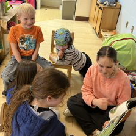HDS students learn in a comprehensive, developmental, and language-rich environment. The foundational skills of reading, writing, speaking and listening are established in the Gan (kindergarten) and built upon throughout the years. The Common Core State Standards and Michigan’s Grade Level Expectations serve to guide and inspire a wide range of literacy experiences designed to equip our students with the skills to communicate. Our goals are to instill in students a lifelong love of reading, writing, speaking and listening, and an appreciation of the power and possibility of words.
Science
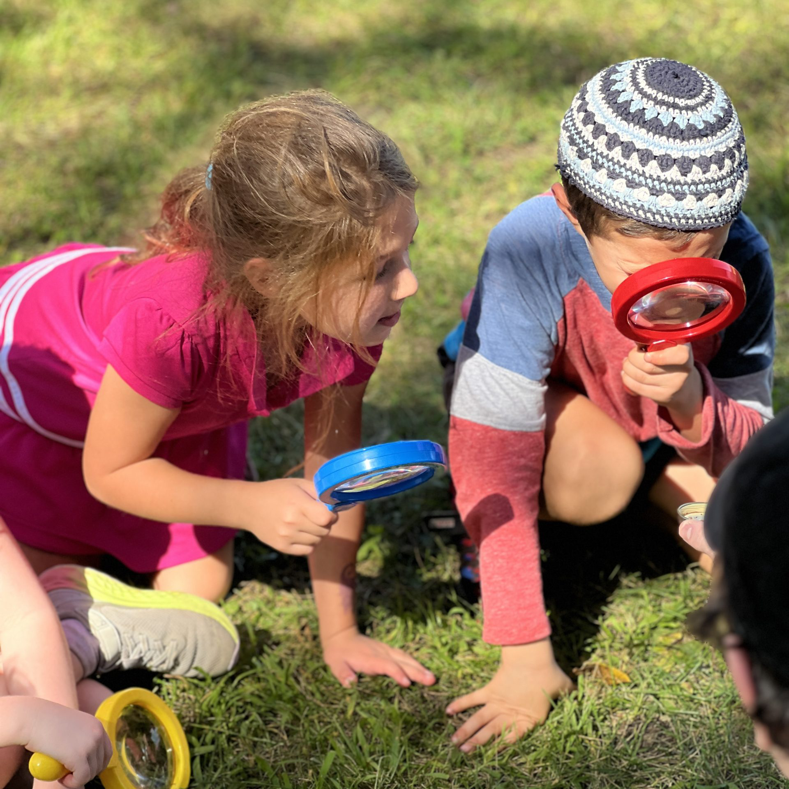Science is curiosity and exploration. Through discovery, students contemplate and investigate their ideas, curiosities and questions as they build a body of knowledge and experiences to draw upon and apply. Science is also about developing the skills to make predictions, collect and interpret data, pose hypotheses and document results. Using the scientific method and a cycle of inquiry, students at HDS build a strong knowledge base in earth, physical and life sciences.
Social Studies
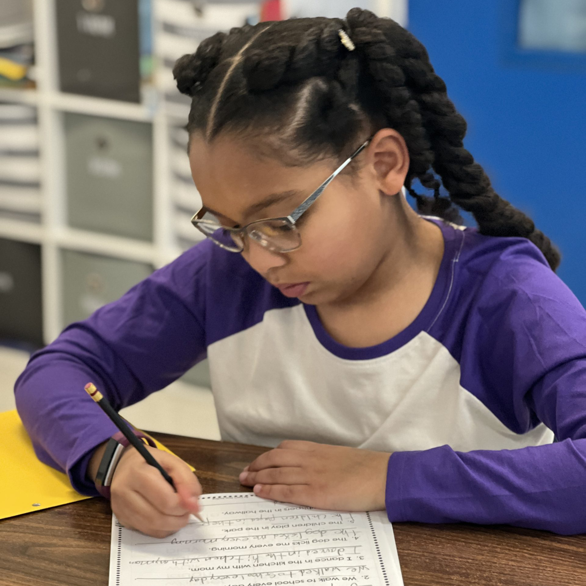Thoughtful, empowered and responsible citizenship begins in the elementary classroom. Seeing connections to the past and future help students understand their place in the world, their community and their families. At HDS, the social studies curriculum is carefully integrated with the language arts and Judaic studies curriculum to help students make these connections explicit. The curriculum comes alive through fiction and non-fiction texts, current events and primary source documents.
Hebrew
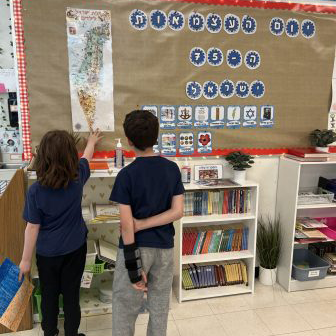The idea of Hebrew as a second language begins with the observation that fluency in any second language adds a rich dimension to a person’s education. Learning a second language at a young age enables learners to become competent and secure in their skills. Beginning with the first day of Gan, our students interact with and learn Hebrew daily, making it a natural part of their lives.
Some of the amazing things our students accomplish during their years at Hebrew Day School are the abilities to learn to read, write, speak, listen, present and think critically in two languages. Our Hebrew and Judaic studies teachers are on the cutting edge of standards integration as evidenced by a commitment to implement appropriate parts of the English Language Arts standards of Common Core State Standards in their Hebrew and Judaic classrooms.
As a unifying thread of our rich heritage, Hebrew is taught as a living language as well as a necessary component in the study of liturgy and ancient Jewish texts. They develop the ability to think, question, and make connections. By learning and speaking Hebrew, our students strengthen their relationship with the Jewish People and with modern Israel.
Judaic Studies
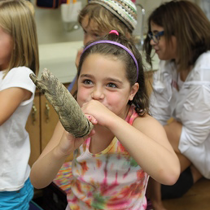Confident, competent, connected. An HDS student lives a rich Jewish life at school by engaging in meaningful rituals, joyful holiday celebrations and deep Torah study. Students gain the confidence necessary to read Hebrew texts, express themselves, ask questions and delve deeply into the curriculum. Students develop a strong connection to the State of Israel through meaningful cultural experiences.
As the only Jewish day school in Ann Arbor, HDS draws students from families from the widest variety of Jewish observance. Through this experience, students learn not only to respect diversity, but to expect it.
Mitzvot
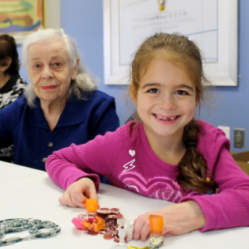Hebrew Day School teaches its students to identify ethical and socially responsible behavior as expressions of authentic Jewish values. When our students and graduates think about what it means to be Jewish, they think about Jewish holidays and rituals, the Hebrew language and their personal connection to the State of Israel. Just as quickly, they think of imperatives such as giving tzedakah, loving their neighbors as themselves, and proceeding always on the understanding that every human being is equally created be-tzelem elohim (in God’s image).
T'Fillot
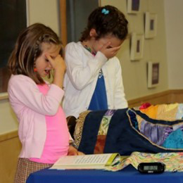Students feel connected to their school community through the common bonds of a shared heritage and the ability to learn and explore it together. This community is enhanced and extended through participation in community t’filot (prayers). In the lower elementary grades, students use song and movement to learn both keva (the reliable routine of prayer) and kavanah (the personally felt meaning of prayer). As students move into the upper elementary classes, they take active leadership roles in t’filah and participate in a weekly Torah service. They learn Torah trope and try their hand at writing their own divrei Torah (commentaries).
Art
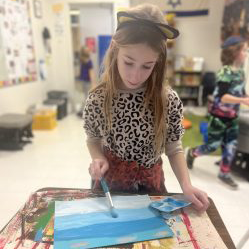“This world is but a canvas to our imagination.” – Henry David Thoreau
The HDS art curriculum is designed to allow students to develop creativity, competency and curiosity. The program enriches and extends the general and Judaic studies curriculum and encourages students to work to understand themselves, their heritage and the world around them. Guided by the State of Michigan and National Arts Education standards, students explore line, shape, form, color, value, texture, dimension, unity, balance, movement, rhythm, contrast, emphasis, and pattern. Students also view and study works of great artists from the world. All students from Gan (kindergarten) through fifth grade have studio art class once a week.
Music

Music enriches our lives and feeds our souls. At HDS, the music curriculum encourages students to enjoy music through the natural instrument within each person – the voice. They learn Hebrew and English songs about holidays, values, and Jewish and Israeli culture. All students sing, move, play rhythm instruments, and listen to a variety of musical styles with the goal of developing positive attitudes and appreciation of music. Starting in third grade, the students are introduced to music reading and theory through direct instruction. Currently, third and fourth graders learn to play the recorder and fifth graders learn to play a wind instrument such as the trumpet, trombone, euphonium, clarinet, saxophone, or flute. Students develop their abilities in the art of performance and experience the joy of a community coming together in music, as they have a variety of group performance opportunities.
There is additional opportunity for music enrichment through joining the HDS Klez Kids band. This after school class brings together musicians of various ages and talents. Klez Kids perform throughout the year both at school functions such as Music Festival and Graduation, and around the community.
Physical Education
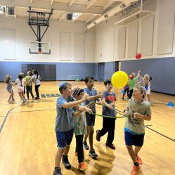Active. Healthy. Good Sports. The goals of the physical education program at HDS are to promote an active, healthy lifestyle, develop strong sportsmanship norms and expose students to a variety of sports and physical activities. All activities are designed to be age-appropriate and focus on the important development of both the individual athlete and the sense of team. Students set personal fitness goals and track their progress throughout the year. HDS students participate in gym class twice a week facilitated by a physical education teacher.
Library
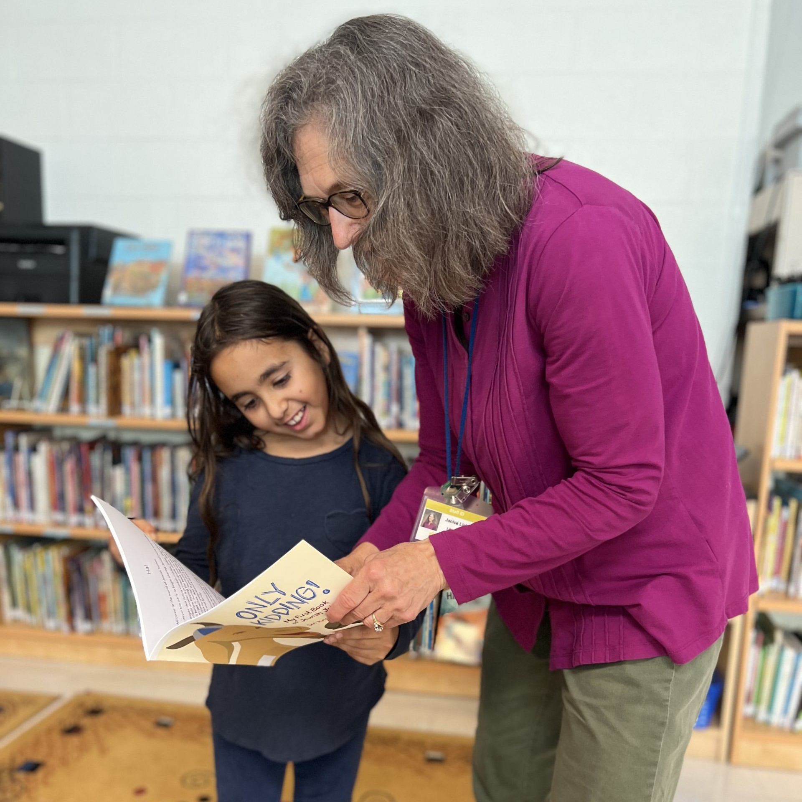Our library program is designed to ignite a love of reading and literature. During weekly visits to the library, students discuss books related to themes inspired by their general and Judaic curricula. Through their interactions with the texts, students are guided in thinking critically, making inferences and predictions, asking questions, and sharing personal responses.
Attention is focused on specific authors, illustrators and genres of literature. Students engage in projects that complement their classwork and learn how to use reference materials for their research. The students are encouraged to check out a variety of titles and are assisted in selecting literature that matches and expands their interests and abilities. Containing over 9,000 volumes, our library provides students and staff with a wide range of choices: secular and Judaic, English and Hebrew, fiction and non-fiction. We welcome and embrace the rapidly changing digital world, while continuing to cherish our nondigital books.
Social-Emotional Learning (SEL)
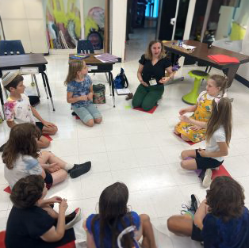Social-emotional learning (SEL) is a vital component to education and child development. Through SEL, children develop skills in five key areas: self-awareness, self-control, social awareness, relationship skills, and responsible decision-making. At Hebrew Day School, we believe that these “human skills” are just as important as academics. Students with a strong foundation in social and emotional skills are better able to cope with everyday challenges, manage their emotions, and navigate relationships. In a supportive, safe, and loving environment, students learn about themselves and others in lessons that are empowering, self-actualizing, and fun. SEL offers positive, long-term effects on students, the school, and the greater community.
Computer Science
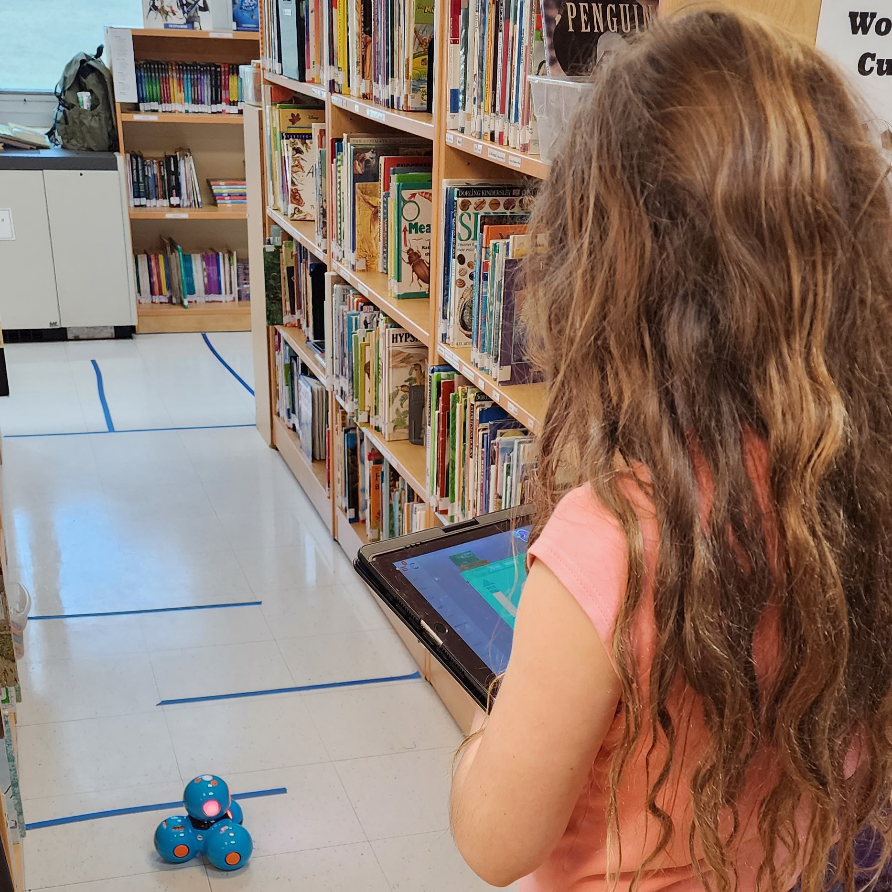The HDS Computer Science program strives to help students become proficient with using technology to enhance their learning. Students practice important computer skills like searching the Internet for a reliable source and creating a digital presentation. By practicing computational thinking and creative problem-solving skills, students gain confidence with technology as they are exposed to emerging trends in the digital world.
In keeping with HDS’s mission of cross-curricular integration, students connect computer science to other spheres of learning like math and art. As part of HDS’ mensch curriculum, we emphasize the importance of responsible technology use and support students in developing healthy digital citizenship skills. Computer science learning provides students with an important foundation in technology that will boost their curiosity, empower them to seek knowledge, and show them how to make meaningful connections that extend beyond the classroom.
Instrumental
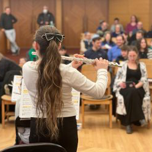Students in upper el (Grades 3-5) have the opportunity to engage with a variety of instruments at different levels.